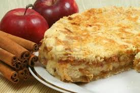
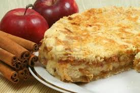

Sweet Bakery ChilVen
Nueva Receta para Diabeticos en Camino!
Los 12 mejores postres para diabéticos elaborados con ingredientes variados que les permitirán disfrutar de todo
tipo de postres. Recetas fáciles de realizar que van, desde pequeños caprichos hasta tartas sensacionales, lo
único que hay que hacer es resistirse a comerlos con moderación.
Tener diabetes no implica que uno tenga que renunciar a la delicia de los postres, a ese sabor fantástico que
aporta un pastel o una fruta, si no que hay que cambiar el tipo de edulcorante o apostar por otro tipo de
recetas que no contengan azúcares.
Cuando hablamos de postres hay que prestar atención al tipo de edulcorantes más sanos que podéis encontrar hoy día en el mercado o en el herbolario. De momento, creo que el mejor valorado y más aconsejado es el azúcar de abedul (también conocido como xylitol).
El xiylitol proporciona el mismo sabor dulce que el azúcar blanquilla, pero tiene un índice glucémico muy bajo. Siempre es importante que, estemos informados sobre el tipo de edulcuranto o bien, investiguemos sobre ellos, leer las composiciones.
Cuando hablamos de postres hay que prestar atención al tipo de edulcorantes más sanos que podéis encontrar hoy día en el mercado o en el herbolario. De momento, creo que el mejor valorado y más aconsejado es el azúcar de abedul (también conocido como xylitol).
El xiylitol proporciona el mismo sabor dulce que el azúcar blanquilla, pero tiene un índice glucémico muy bajo. Siempre es importante que, estemos informados sobre el tipo de edulcuranto o bien, investiguemos sobre ellos, leer las composiciones.
- Bavarois de fresa.
- Tarta de manzana para diabéticos.
- Flan de chocolate diabéticos.
- Bizcocho sin azúcar para diabéticos.
- Brownie de plátano.
- Tarta de queso sin azúcar.
- Gelatina de yogur sin azúcar.
- Mousse de chocolate para diabéticos.
- Tartaletas de crema y fresa.
- Tarta de mascarpone y chocolate blanco sin azúcar.
- Mousse de aguacate y chocolate negro.
- Manzanas asadas con canela.


.jpg)
.jpg)
.jpg) 
